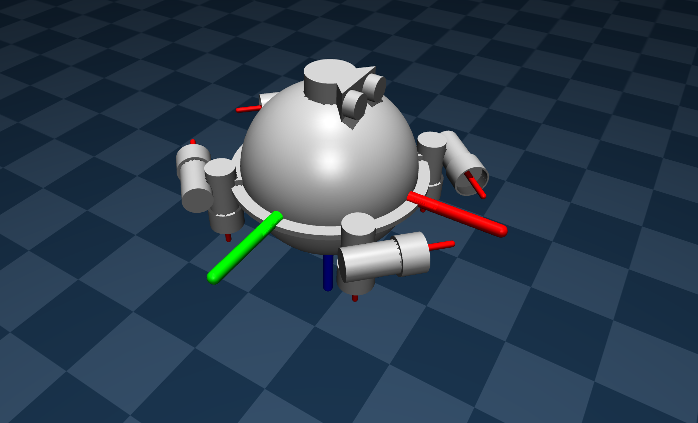

This project presents a robust and hybrid control strategy for Autonomous Underwater Vehicles (AUVs) using Model Predictive Control (MPC), Control Barrier Functions (CBF), and Sliding Mode Control (SMC). The high-fidelity simulations are powered by MuJoCo, considering complex underwater dynamics and obstacle avoidance.
.
├── data
├── mujoco_model
├── notebook
├── src
git clone https://github.com/vdcuong2002/AUV-ODIN-mujoco.git
cd AUV-ODIN-mujoco
python3 -m venv venv
source venv/bin/activate
pip install -r requirements.txt
python mujoco_model/checkMuJoCo.py